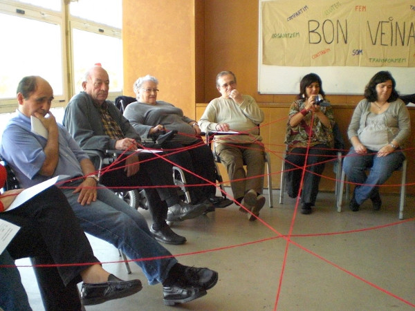

Iniciativa veïnal orientada a disminuir el sentiment de soledat i aïllament de les persones
grans del barri, a reforçar la seva autonomia personal i la seva xarxa social, i a defensar els
seus drets socials. El projecte, impulsat des de l’Associació Barceloneta Alerta des de
l’any 2005, es porta a terme a través d’un grup de voluntaris, que realitzen les tasques
següents:
Companyia setmanal: Acompanyen setmanalment persones grans que es troben soles i en
situació d’aïllament. Les acompanyen a passejar, a comprar, o als casals de gent gran
del barri per facilitar que puguin participar en les activitats i tallers.
Acompanyaments puntuals i gestions: Acompanyen puntualment una persona gran amb
dificultat de mobilitat per anar al metge o fer alguna gestió.
Sortides amb grup: De tant en tant es fan sortides grupals per tal de promoure espais
comuns entre els col·laboradors i les persones grans.
Per fer possible el projecte es compta amb la col·laboració del CAP i del Centre de Serveis
Socials del barri, que ofereixen formació per poder desenvolupar millor la tasca dels
col·laboradors.
Espai de participació:
el grup de col·laboradors de Bon Veïnatge amb la Gent Gran es reuneix cada dos o tres mesos
per intercanviar experiències i decidir les activitats impulsades en el marc del projecte.
Com s’hi pot col·laborar?
Com a voluntari amb la gent gran.
Donant informació del projecte a altres veïns que vulguin col·laborar, o a persones
grans que en tinguin la necessitat.
Els voluntaris poden col·laborar de manera més continuada, o bé més esporàdicament, en
funció de la seva disponibilitat i motivació. Tot el temps que es pugui dedicar a donar suport
a la gent gran és benvingut!